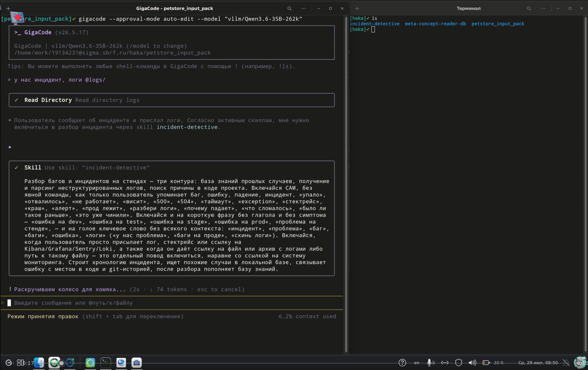
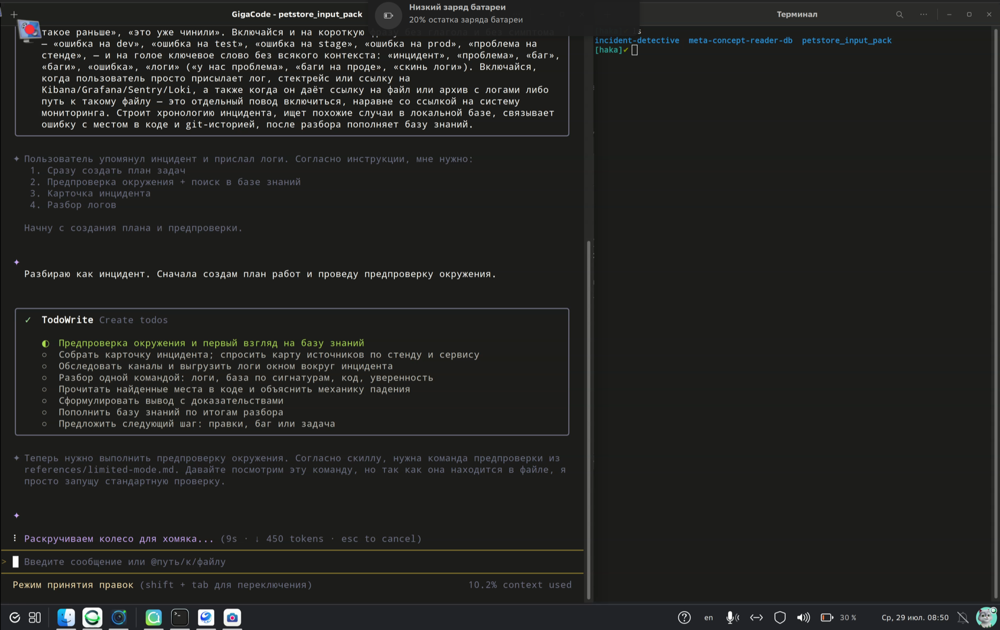
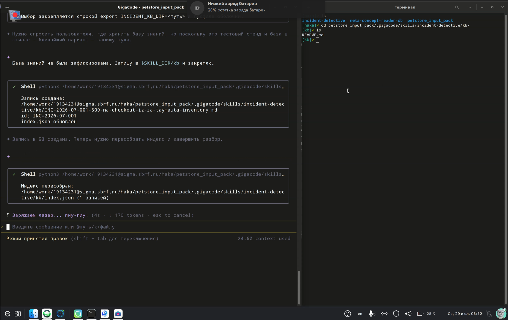
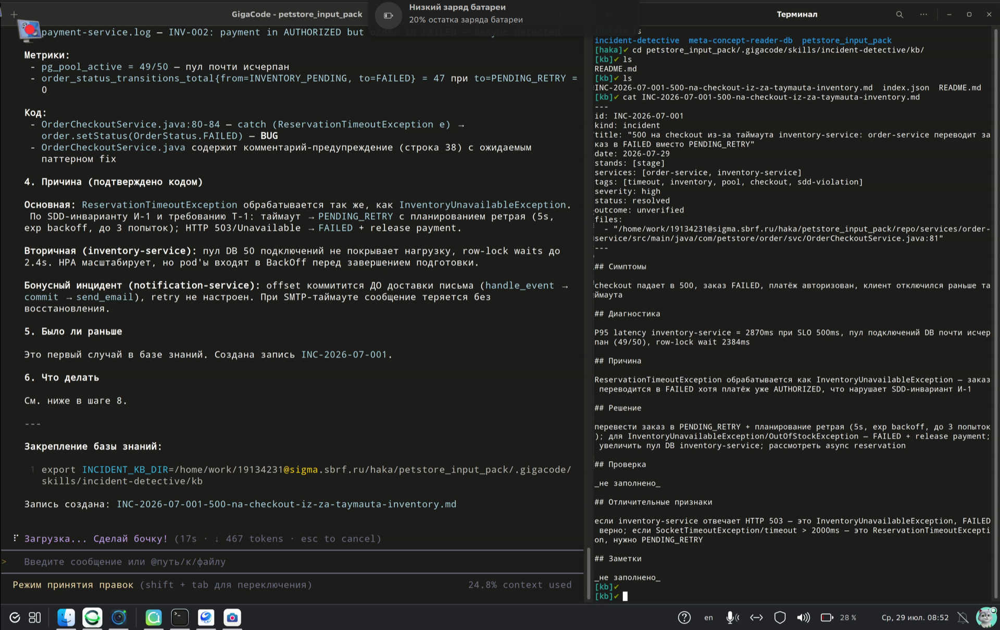
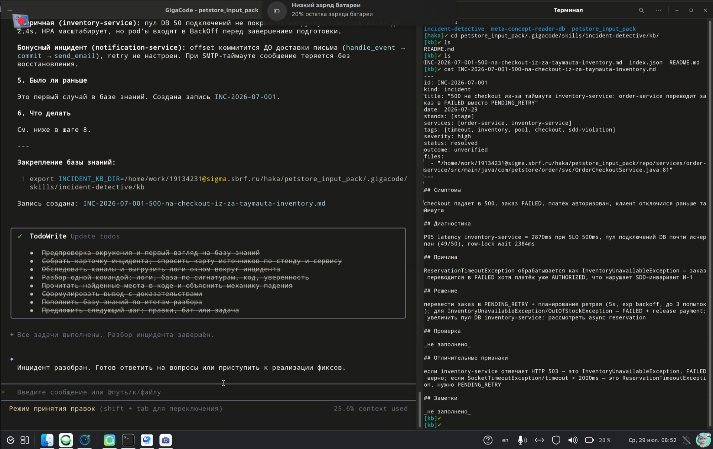
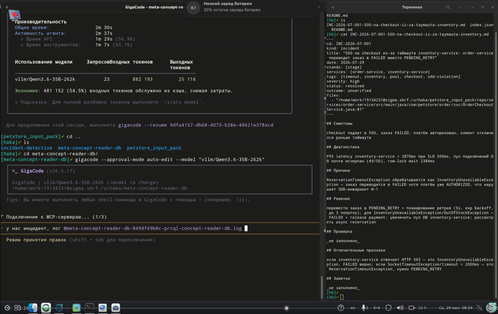
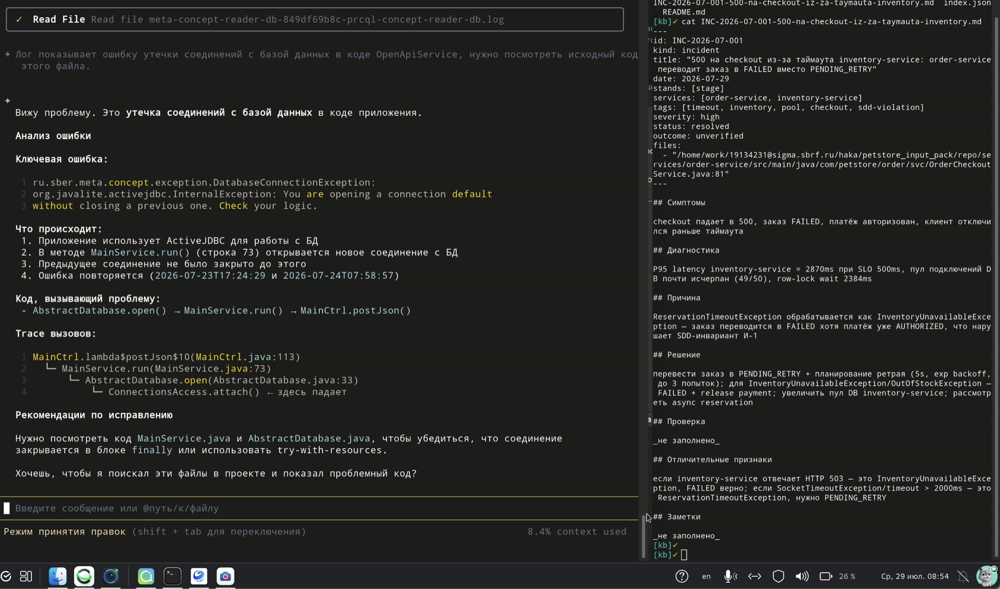
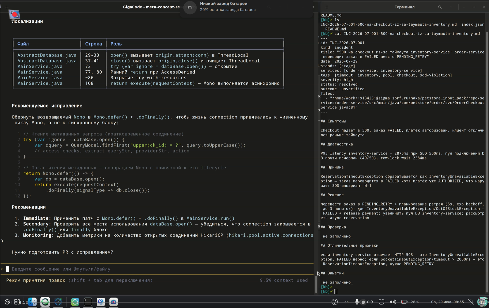

Agent Skill · разбор инцидентов
Логи, база прошлых случаев и код: три независимых источника сходятся в один вывод с честной оценкой уверенности.
Формат Agent Skills · только Python из стандартной библиотеки · без сети и без сборки
Опиши инцидент своими словами — дальше агент сам разбирает логи, поднимает похожие прошлые случаи, находит место в коде и называет причину вместе с уровнем уверенности.
На выходе не пересказ логов, а вердикт с доказательствами: у каждого утверждения назван источник — файл и время в логе, запись базы знаний, строка кода. Если уверенности не хватает, это так и написано, с перечнем того, чего не хватило.
Разбор заканчивается не выводом, а следующим шагом: правки, баг или задача на доисследование, а также записью в базе знаний, чтобы следующий такой же инцидент начинался не с нуля.
GigaCode запущен в проекте. Пользователь пишет обычную фразу — «у нас инцидент, логи @logs/». Явной команды нет: агент сам сопоставляет её с описанием скилла и включает incident-detective.

До любых команд агент выкладывает план разбора: предпроверка окружения, карточка инцидента, выгрузка логов окном, разбор, чтение кода, вывод, запись в базу знаний, следующий шаг. Ход разбора виден и его можно остановить.

База знаний не была закреплена — агент называет место, куда пишет, и закрепляет его. Скрипт создаёт запись INC-2026-07-001 и пересобирает индекс: слева работа агента, справа те же файлы в терминале.

Причина названа вместе с источниками: метрики (pg_pool_active = 49/50), строка кода OrderCheckoutService.java:80-84, нарушенный инвариант. Справа — карточка базы знаний: симптомы, диагностика, причина, решение, отличительные признаки.

Все пункты плана закрыты, разбор завершён. Итог не растворяется в переписке: запись INC-2026-07-001 лежит в базе знаний, и следующий такой же инцидент начнётся не с чистого листа.

Весь разбор — 2 мин 30 с и 23 запроса к модели, 54.5% входных токенов обслужено из кэша. Дальше — тот же скилл запускается на другом проекте, с другим стеком и другим форматом логов.

Java-сервис, лог с DatabaseConnectionException. Скилл разбирает трассу вызовов до места падения — MainCtrl.postJson() → MainService.run() → AbstractDatabase.open() — и называет механику: соединение открывается, не закрыв предыдущее.

Локализация в коде таблицей «файл — строка — роль», затем предложенный патч: привязать жизнь соединения к жизненному циклу Mono через defer() + doFinally(). Правка предложена, но не применена молча — сначала объяснена причина.

Спасибо за внимание
Стол 96